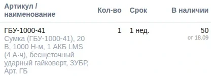
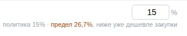
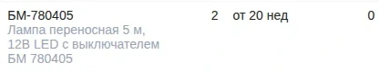
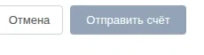

Стратегическая сессия для собственников
Что можно изменить в твоём бизнесе с ИИ. И с чего начать.
Разберём устройство твоей компании, найдём возможности для роста, сокращения ручной работы и повышения управляемости. Выберем приоритеты и соберём маршрут изменений на ближайшие месяцы.
Неделя подготовки·Очная сессия·4 недели групповых разборовДо 10 участников · 100 000 ₽ за участника
Необязательно приходить с готовой идеей автоматизации.

Интерес к ИИ есть. А системных изменений пока нет.
- Пока не началНастройки, доступы и вопросы безопасности кажутся сложнее, чем потенциальная польза.
- Уже пользуешьсяПисьма и расчёты делаются быстрее, но основные процессы компании остаются прежними.
- Даже составил планТолько текущие дела постоянно отодвигают его реализацию.
Возможно, следующий шаг не ещё один инструмент, а целостное понимание: что менять в компании и как организовать эти изменения.
Сначала увидеть возможность. Потом выбирать инструмент.
Изнутри операционки многие возможности не видны. Поэтому начинаем с устройства компании: где заявки, деньги, документы и решения проходят через людей. Инструмент выбираем потом. Иногда это ИИ, иногда настройка существующей системы, обычный расчёт по проверяемым формулам, другой порядок работы или отказ от разработки.
Пример из моей компании · используется в работе
Заявка клиента на 30 позиций становится счётом, который проверяет и отправляет менеджер



1Наличие и срок у поставщика подставлены по каждой строке.

2Скидка ограничена политикой компании и пределом закупки.

3Позиции нет в наличии: что предложить взамен, решает менеджер.

4Счёт уходит клиенту, только когда менеджер нажмёт «Отправить счёт».
Ситуация
Клиенты присылают заявки письмами, часто на десятки позиций. По каждой нужно найти товар, проверить наличие у поставщиков и не дать скидку ниже закупки.
Решение
Не ускорять одну операцию, а связать процесс целиком: входящая заявка, данные поставщиков, правила компании по скидкам и действие сотрудника.
Что работает
Система разбирает письмо, находит позиции, подставляет наличие и срок 1 и держит скидку в пределах политики 2.
Что за человеком
Чем заменить позиции без наличия 3 и решение отправить счёт 4. Без менеджера клиент ничего не получит.
На снимке закрыты адрес клиента, закупочные цены и маржа в рублях по строкам.
Как устроена система подробно →Ещё пример из практики
Калькулятор расхода герметика
Для клиента я сделал калькулятор расхода на основе расчётных характеристик и открытых технических документов. Сам заказчик такую возможность сначала не рассматривал: полезное изменение не всегда видно изнутри.
Не список идей. Карта изменений твоей компании.
С сессии уходишь с одним рабочим документом. Ты собираешь его по общей методике, я даю обратную связь. В нём четыре части.
- Карта возможностейКакие направления имеют смысл именно в твоей компании.
- Целевая схема работыЧто меняется в процессах, движении информации, ролях сотрудников и твоих решениях.
- Приоритетные инициативыПочему начинаем с них, какой эффект проверяем, какие ограничения учитываем.
- Маршрут реализацииОтветственные, ресурсы и контрольные точки на ближайшие месяцы.
Карта изменений · фрагмент
Демонстрационный пример. Не результат участника.Направления
| Направление | Какое изменение рассматриваем | Что выяснить до запуска |
|---|---|---|
| Логистика | Сделать расходы сопоставимыми по заказам и направлениям | Какие данные доступны и какие решения будут приниматься по ним |
| Согласования | Уменьшить ручное участие собственника в типовых решениях | Полномочия, исключения и ответственные |
| Работа с клиентами | Превратить повторяющийся расчёт в удобный сервис | Кто использует, как проверяется расчёт и в чём польза |
Первый шаг по направлению «Согласования»
- ШагОписать действующий процесс согласований
- ОтветственныйНазначенный руководитель
- Данные и ресурсПримеры типовых и исключительных случаев
- Контрольная точкаСогласованные правила для пилотного изменения
Подробно
Первые 8 недель
Конкретные шаги по выбранным инициативам: кто отвечает, какой нужен ресурс, когда и по какому признаку проверяем результат.
Ориентир
6 месяцев
Последовательность следующих изменений. Это не обещание спланировать всё за день: маршрут пересматриваем по мере того, как подтверждаются первые шаги.
Что фиксируется по каждой выбранной инициативе
- Бизнес-цель и текущая проблема
- Ожидаемое изменение и гипотеза пользы
- Данные и зависимости
- Ответственный и ближайшее действие
- Критерий проверки
- Условие, при котором продолжаем, меняем или останавливаем
Карта описывает работу бизнеса и порядок изменений. Это не техническое задание и не архитектура программной системы.
До встречи расширяем представление. На встрече выбираем. После двигаемся по плану.
Неделя до встречи
Подготовка
Короткие материалы и демонстрации, разбор кейсов, паспорт компании и онлайн-встреча до 90 минут.
Не нужно заранее выбирать задачу или устанавливать программы.
Очный день · 6 часов работы
Стратегическая сессия
Разбираем твой бизнес, рассматриваем возможности, выбираем направления и собираем карту изменений с обратной связью.
4 недели после
Групповые разборы
Раз в неделю онлайн до 2 часов: как идёт движение, что мешает, какие решения следующие.
Подготовка: что посмотрим и что такое паспорт компании
Мини-обучение и демонстрации
- Чем различаются чат-помощник, создание инструмента и изменение бизнес-процесса.
- Какие бывают изменения: внутренний инструмент, сервис для клиентов, управленческая информация, взаимодействие сотрудников.
- Как отличить привлекательную демонстрацию от полезного рабочего решения.
- Какие вопросы проверить до реализации.
Паспорт компании
Как бизнес зарабатывает, где основные расходы, какие решения замыкаются на тебе, какие процессы отнимают внимание, где теряется информация, какие системы уже используются и какие изменения откладываются. Описываешь процессы своими словами, без чувствительных данных. Я изучаю паспорт до встречи, чтобы на сессии говорить о твоей компании предметно.
Техническое задание и выбранная автоматизация не нужны. Материалы курса по работе с ИИ-инструментами остаются справочными: проходить их и покупать подписки для участия не нужно.
Очный день по шагам
Короткое вступление задаёт общую рамку. Дальше работаем вокруг компаний участников:
- Цели собственника и ограничения бизнеса.
- Возможности изменить процессы, информацию, взаимодействие и управленческие решения.
- Как должна работать выбранная часть компании после изменений.
- Сравнение направлений по эффекту, сложности, готовности данных, рискам и нагрузке на команду.
- Выбор инициатив и связей между ними. Часть идей обоснованно откладываем или отклоняем.
- Исполнители, твоя роль, ресурсы, ближайшие действия и точки проверки.
Это групповая работа: общая методика, твоя карта и адресная обратная связь, а не отдельная многочасовая консультация каждому. Шесть часов считаются без перерывов.
Четыре разбора после встречи
- Первый шаг: кто отвечает, что началось, какое решение или ресурс блокирует движение.
- Первые данные и проверки: что подтверждается, что нужно изменить.
- Включение изменений в работу команды: участники процесса, порядок, ответственность.
- Промежуточные итоги: что продолжать, изменить или остановить. Обновляем следующий отрезок маршрута.
Перед встречей присылаешь короткий статус и вопрос. Между встречами организуешь реализацию сам, через сотрудника или подрядчика. Темп внедрения у всех свой.
Участие
100 000 ₽
за участника · до 10 человек в группе
Дату и место ближайшей группы обсудим, когда напишешь.
Обсудить участиеВходит
- Подготовительные материалы и онлайн-встреча до 90 минут
- Предварительное изучение паспорта твоей компании
- Очная стратегическая сессия, 6 часов работы
- Карта изменений, которую собираешь с моей обратной связью
- Четыре групповых онлайн-разбора до 2 часов
Подходит
Собственнику, который готов обсуждать устройство бизнеса, принимать решения и организовывать исполнение. Готовая идея автоматизации и навык программирования не нужны.
Если хочется передать разработку под ключ и больше не участвовать, это другой формат.
Подписки и сервер для участия покупать не нужно. Расходы на реализацию выбранных решений в стоимость не входят. Дорога и проживание отдельно.
Вопросы
Я не понимаю, что автоматизировать. Мне рано?
Нет. Поиск подходящих направлений входит в сессию. Для начала нужно описать бизнес и то, что хотелось бы изменить, а не составить техническое задание.
Я уже пользуюсь ИИ. В чём ценность?
Работаем не над знакомством с инструментами, а над тем, как связать возможности с процессами, приоритетами и управлением изменениями в компании.
Нужно уметь программировать и всё заранее установить?
Нет. На сессии не требуется разрабатывать программу. Подготовка помогает разобраться в возможностях и собрать картину бизнеса.
У меня уже есть план, но он не выполняется.
Разбираем не только содержание плана, но и исполнение: ответственность, ресурс, препятствия, ближайший шаг и точки принятия решений. После сессии возвращаемся к этому на групповых разборах.
Как быть с данными и безопасностью?
Для первичного разбора не нужны пароли, платёжные данные или доступ к рабочим системам. Используем описания процессов и обезличенные примеры. Риски и ограничения учитываем при выборе направлений; сессия не заменяет профильный аудит конкретного внедрения.
Будет ли готовая система?
Результат сессии: карта изменений и организация дальнейших действий. Разработка и внедрение выбранных решений идут отдельно: тобой, командой или подрядчиком.
Расскажи о своей компании и о том, где ты сейчас с ИИ.
Обсудим, что даст тебе стратегическая сессия.
Обсудить участиеПишешь мне лично в Telegram: @alexkukhnikov